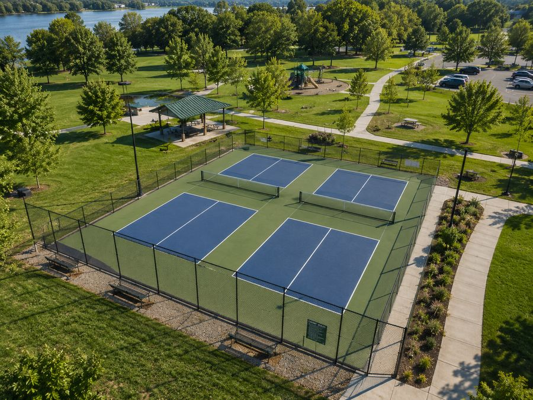
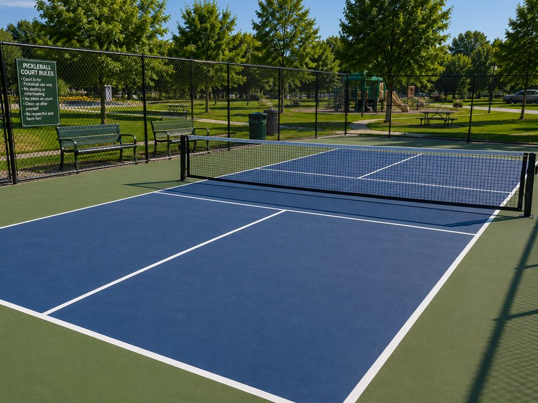

Commercial & Institutional
Commercial Pickleball Court Installation
Multi-court builds for schools, municipalities, churches, clubs, HOAs, retirement communities and developers. Designed for daily public use and Ontario weather.
- Single courts through multi-court complexes
- Accessibility and drainage planned in
- Tender and procurement documentation
- Phased builds to suit budget cycles
Request Estimate Call (705) 242-8236
Free estimates · Locally focused service · Clear, written quotes
Commercial & Institutional
Courts Built for Heavy, Daily Use
A backyard court might see a few hours a week. A school, park or club court can see hundreds of hours a season, played by everyone from beginners to competitive leagues, in every kind of weather.
That changes almost every decision in the build. Deeper base. Tighter drainage tolerances. Heavier fencing and gates. Better lighting. A surface system chosen for how it wears rather than how it photographs.
We build single courts, multi-court complexes and phased projects for organizations across Peterborough County, Kawartha Lakes and Northumberland.

Who We Build For
Organizations We Work With
Different clients, different priorities. Here is what each one usually needs us to get right.
-
Schools
Durable surfacing that survives daily gym class and recess. Multi-sport lines so one pad serves several programs. Safe fencing and clear sightlines for supervision.
-
Municipalities & Parks
Public durability, accessible routes, drainage that works through spring melt, and noise planning relative to nearby homes. Tender-ready documentation.
-
Churches & Community Groups
Good value builds that serve a wide age range. Often phased so the project fits a fundraising timeline.
-
Sports & Racquet Clubs
Playing quality first. Consistent bounce, true lines, cushioned options for league play, and layouts that support tournaments.
-
HOAs & Condo Boards
An amenity that raises the property without creating a noise complaint file. Careful placement and acoustic treatment matter here more than anywhere.
-
Retirement Communities
Cushioned surfacing, shade, seating, level access and non-glare lighting. The court gets used every day, so comfort details pay off.
-
Apartments & Developers
Amenity courts that differentiate a property. We can spec courts into site plans early so servicing and grading account for them.
-
Resorts & Camps
Seasonal high-intensity use, often on rural or waterfront sites with tricky drainage and access. We plan for both.
Durability
Building for a Public Court's Workload
Commercial courts fail differently than residential ones. It is rarely a dramatic failure. It is gradual wear that makes the court slippery, uneven or unsafe, and then it has to close during the busiest part of the season.
Base and slab
We build the granular base deeper for commercial work and compact it in tighter lifts. On clay sites and larger multi-court pads, post-tensioned concrete is worth considering because it handles soil movement better than conventionally reinforced slabs.
Drainage
Spring melt is harder on a court than summer rain. We plan for volume, not just for a typical rainfall. That can mean perimeter drains, catch basins tied into site storm, or regrading the surrounding ground so meltwater has somewhere to go.
Surfacing
Public courts get scuffed, dragged, and played on when wet. We use surfacing systems built for that and apply enough coats to give the texture some life. Cutting a coat to save money shows up two seasons later.
Fencing and gates
Commercial fencing needs heavier posts, proper footings below frost, and gates rated for constant use. Gate hardware is usually the first thing to fail on a public court, so it is worth specifying properly.
Lighting
LED sports fixtures on poles, aimed and shielded to put light on the court and keep it off the neighbours. Even coverage matters, because dark corners are where people turn ankles.
Accessibility
Accessibility Considerations
Public and institutional courts in Ontario need to be usable by people with disabilities. Requirements come from the Accessibility for Ontarians with Disabilities Act and from your municipality's own site plan standards, so the exact details vary by project.
In practice, the things we plan for are:
- A firm, stable, level route from accessible parking to the court gate
- Gate openings wide enough for a wheelchair, with no raised threshold or lip
- Level transitions between the approach surface and the court itself
- Accessible seating and viewing areas outside the run-off zone
- Colour contrast between the court surface and its surroundings
- Enough space behind the baseline for wheelchair pickleball, where that is a goal
Confirm requirements early
Accessibility standards and municipal site plan conditions change and differ between jurisdictions. We build to what your project requires, but your planner, architect or municipality should confirm the applicable standard before design is finalized.
Project Planning
How a Commercial Project Runs
Larger projects have more moving parts. Here is the sequence we follow so nothing surprises you halfway through.
Scoping
We meet with your committee, board or staff to understand court count, budget, timeline, funding cycle and how the space will be programmed.
Site Assessment
Survey of grades, soils, drainage, servicing, access, existing structures and the distance to the nearest residential property lines.
Concept & Budget
Layout options with court counts, a phasing plan if needed, and an itemized budget you can take to a board or council.
Approvals
Support with site plan approval, permits, conservation authority review where applicable, and ESA requirements for lighting.
Construction
Excavation, base, drainage, concrete, cure, surfacing, striping, fencing, lighting and site restoration, sequenced to minimize disruption.
Handover
Walkthrough with your facilities staff, a written maintenance schedule, and a plan for the resurfacing cycle so it lands in a future budget year.
Ongoing Care
Maintenance Commercial Courts Actually Need
A public court left alone will look tired within three seasons. The good news is the routine is short and cheap compared to the cost of early resurfacing.
- Weekly in season. Clear debris, check for standing water after rain, look at net tension and gate hardware.
- Twice a year. Low pressure wash the surface, inspect for hairline cracks, check fence footings and lighting fixtures.
- Annually. Fill and seal any cracks before winter. Water in a crack over a Peterborough winter is what turns a hairline into a real repair.
- Every five to eight years. Resurface. Budget for it on a cycle rather than reacting when the surface fails mid-season.
We offer scheduled maintenance for organizations that would rather not manage it in house. Details are on our court maintenance page.
Commercial Projects
Planning a Court Project?
Send us your site dimensions, court count and timeline. We will come out, assess the site and put together a budget you can bring to your board or council.
Questions
Frequently Asked Questions
How many pickleball courts fit in a given area?
A single court needs a 30 by 60 foot pad at minimum. For multi-court layouts you can share side run-off between adjacent courts, so four courts side by side need less than four times the space of one.
Send us the dimensions of your site and we will lay out how many courts fit with proper spacing and circulation.
Do commercial courts need to be accessible?
Accessibility requirements come from the Accessibility for Ontarians with Disabilities Act and your municipality's site plan requirements. In practice that usually means a firm, level route from parking to the court, gate openings wide enough for a wheelchair, no lip at the gate threshold, and accessible seating or viewing space.
We build these details into the design from the start. Your architect or planner should confirm the exact requirements for your site.
How long do commercial courts last before resurfacing?
Under heavy public use, expect five to eight years between resurfacing rather than the eight to ten a lightly used backyard court gets. The base, if built correctly, lasts far longer than the coating.
Budgeting for resurfacing on a cycle is much cheaper than waiting until the surface fails.
Can you build courts in phases?
Yes, and it is often the smart approach for municipalities and clubs working within an annual budget. We can build the base and drainage for the full footprint, then surface courts in stages as funding allows.
Planning the whole site up front avoids paying twice for excavation and servicing.
What about noise from a public court?
This is the single biggest source of complaints about public pickleball courts in Ontario, and it has led to real enforcement action. Setback from the nearest homes matters most. Acoustic barrier fencing, orientation, planted buffers and posted quiet hours all help.
We strongly recommend addressing this in the design rather than after the first complaint arrives.
Do you work with tender and procurement processes?
Yes. We are set up to provide the documentation, specifications, drawings and insurance certificates that municipal and institutional procurement requires. Send us the tender package and we will respond to it.
Can an existing tennis court be converted?
Usually yes, and it is excellent value. A standard tennis court has room for up to four pickleball courts. If the slab is structurally sound, conversion means crack repair, resurfacing and new striping rather than new construction.
See our resurfacing page for details.
What surface holds up best to heavy use?
For high-traffic public courts, a properly built concrete base with a quality acrylic system is the most reliable. Cushioned acrylic adds comfort for programs serving older players. Modular tile works well where you need drainage or multi-sport flexibility.
Service Area
Where We Build Pickleball Courts
We are based in Peterborough and most of our work is within about an hour of the city. If your property is not on the list below, call anyway. We travel for the right project.
- Peterborough
- Lakefield
- Bridgenorth
- Ennismore
- Selwyn
- Douro-Dummer
- Norwood
- Havelock
- Millbrook
- Keene
- Warsaw
- Buckhorn
- Cavan Monaghan
- Otonabee-South Monaghan
- Bailieboro
- Curve Lake
- Lindsay
- Kawartha Lakes
- Bobcaygeon
- Omemee
- Cobourg
- Port Hope
- Campbellford
- Hastings
- Apsley
- Young's Point
Peterborough & Selwyn Township
Peterborough, Lakefield, Bridgenorth, Ennismore, Young’s Point and Curve Lake. These are our closest jobs and usually our fastest scheduling. Lots north of the city often have room for a full 30 by 60 foot court with space to spare.
East & North of the City
Douro-Dummer, Warsaw, Norwood, Havelock, Apsley and Buckhorn. Rural acreage and waterfront properties here suit a court well, though soil and drainage conditions change a lot from lot to lot.
South & West
Millbrook, Cavan Monaghan, Keene, Bailieboro, Otonabee-South Monaghan, Omemee, Lindsay, Bobcaygeon and the wider City of Kawartha Lakes.
Northumberland & Beyond
Cobourg, Port Hope, Campbellford and Hastings. We take on work in these areas regularly, especially commercial builds and court resurfacing.
Free Estimate
Request a Commercial Court Estimate
Tell us about your project. We’ll get back to you with next steps and a time for a site visit.
- No cost, no pressure site visit
- Clear written quote with the work itemized
- Straight answers about what your site actually needs
- Serving Peterborough and the surrounding townships